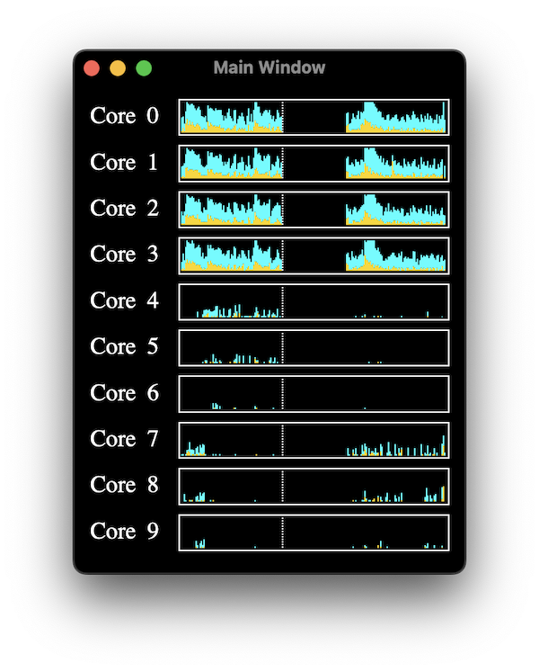
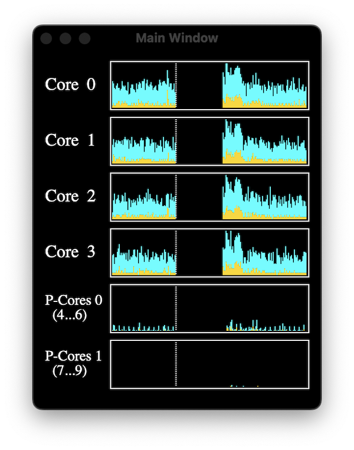
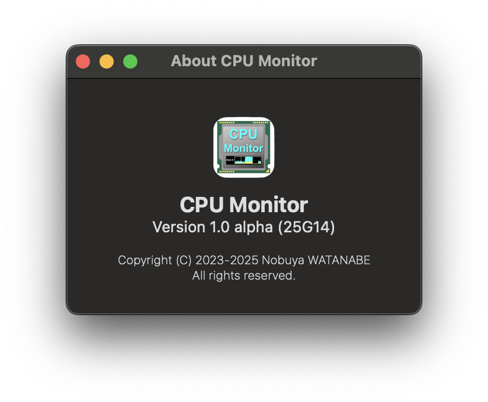

CPU Monitor is a CPU monitoring tool that displays CPU activity, similar to Activity Monitor, a standard macOS utility. Unlike the Apple's Activity Monitor, the CPU Monitor displays CPU operating status more precisely (every 0.2 seconds).
It also has the ability to make the display window transparent, to automatically change transparency depending on the CPU load, and to display the operating status of high performance cores (P-cores) by cluster (for Apple Silicon), etc.
 

Nobuya WATANABE